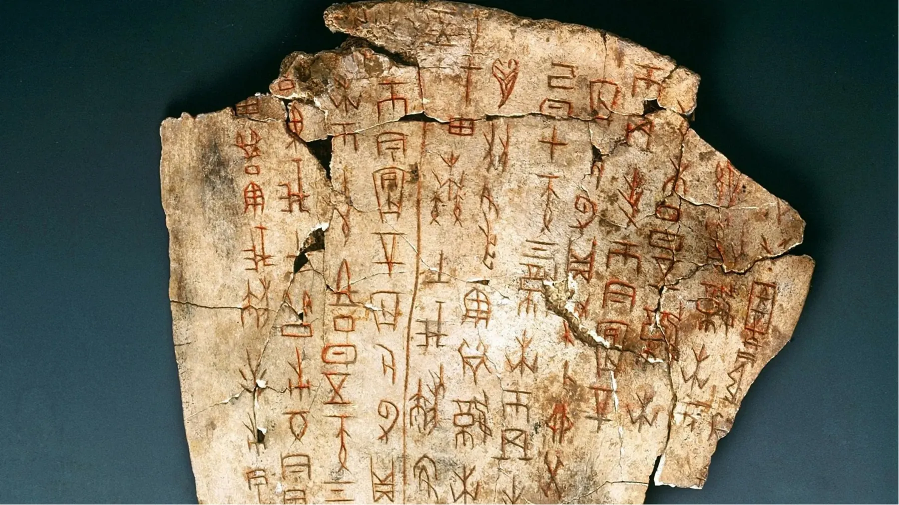

<meta charset="utf-8"><meta name="viewport" content="width=device-width,initial-scale=1">
<title>Урок 1 — Привет, китайский!</title>
<link rel="preconnect" href="https://fonts.googleapis.com">
<link rel="preconnect" href="https://fonts.gstatic.com" crossorigin>
<link rel="stylesheet" href="https://fonts.googleapis.com/css2?family=Lora:ital,wght@0,500;0,600;1,500&family=Manrope:wght@500;600;700;800&family=Nunito:wght@800;900&display=swap">
<style>
@font-face{font-family:'LXGW WenKai GB';src:url(data:font/woff;base64,__FONT_GB__) format('woff');font-display:block}
/* Layout: 1280×720 stage on cream paper, same system as «Выходим в город» (初级二): pill titles at top centre,
   photos full-bleed fading into paper, indigo hanzi, italic jade pinyin, Lora for Russian headings, gold hairlines. */
:root{
  color-scheme:light;
  --ink:#191B2E; --ink-3:#3E4262; --muted:#6C6982;
  --vio:#4E4C8E; --vio-2:#33315F; --vio-tint:#EAE8F5;
  --jade:#2E7F6C; --jade-2:#1A5748; --jade-tint:#E3F0EC;
  --gold:#BE9760; --gold-2:#8A6B34; --gold-tint:#FAF3E6;
  --rose:#A8456A; --paper:#FAF5EA; --desk:#EDE4D4;
  --serif:'Lora',Georgia,serif;
  --sans:'Manrope',system-ui,-apple-system,'Segoe UI',sans-serif;
  --han:'LXGW WenKai GB','Noto Sans SC','PingFang SC','Microsoft YaHei',sans-serif;
}
*{box-sizing:border-box;margin:0;padding:0}
html,body{height:100%}
body{background:var(--desk);font-family:var(--sans);color:var(--ink);overflow:hidden}
#stage{position:absolute;left:50%;top:50%;width:1280px;height:720px;transform-origin:0 0;overflow:hidden;background:var(--paper)}
.slide{position:absolute;inset:0;overflow:hidden;opacity:0;pointer-events:none;transition:opacity .38s ease;
  background:radial-gradient(120% 90% at 50% 30%,#FFFCF4 0%,var(--paper) 55%,#EFE6D3 100%)}
.slide.live{opacity:1;pointer-events:auto}
.rv{opacity:0;transform:translateY(9px);transition:opacity .5s ease,transform .5s cubic-bezier(.22,.9,.3,1)}
.rv.on{opacity:1;transform:none}
@media (prefers-reduced-motion:reduce){.slide,.rv{transition:none}}

/* type */
.z{font-family:var(--han);color:var(--vio-2);font-weight:400}
.p{font-family:var(--sans);font-style:italic;font-weight:700;color:var(--jade-2)}
.r{color:var(--ink-3);font-weight:600}
b{font-weight:800;color:var(--ink)}
em{font-style:normal;font-family:var(--han);color:var(--vio-2);font-size:1.12em}
i.py{font-style:italic;font-weight:700;color:var(--jade-2)}

/* pill title */
.hd{position:absolute;left:50%;top:22px;transform:translateX(-50%);z-index:12;white-space:nowrap;
  display:inline-flex;align-items:baseline;gap:16px;padding:11px 30px;border-radius:999px;
  border:1px solid rgba(190,151,96,.85);background:rgba(252,249,241,.95);box-shadow:0 10px 26px -16px rgba(30,22,10,.7)}
.hd .z{font-size:36px;line-height:1}
.hd .p{font-size:19px}
.hd .r{font-size:18px}
.hd.left{left:56px;transform:none}

/* text page */
.page{position:absolute;left:72px;right:72px;top:112px;bottom:48px;display:flex;flex-direction:column;justify-content:center}
.ttl{position:absolute;left:72px;top:46px;right:72px;display:flex;align-items:baseline;gap:18px;flex-wrap:wrap}
.ttl .z{font-size:44px;line-height:1}
.ttl .p{font-size:20px}
.ttl h2,.h2{font-family:var(--serif);font-weight:600;font-size:34px;color:var(--vio-2);letter-spacing:-.01em;line-height:1.15;text-wrap:balance}
.lead{font-size:21px;line-height:1.6;color:var(--ink-3)}
ul.dl{list-style:none;display:grid;gap:18px}
ul.dl>li{position:relative;padding-left:26px;font-size:21px;line-height:1.58;color:var(--ink-3)}
ul.dl>li::before{content:"";position:absolute;left:0;top:.78em;width:12px;height:2px;background:var(--jade)}
.cols{display:grid;grid-template-columns:1.2fr 1fr;gap:48px;align-items:center}
.cols>*{min-width:0}

/* surfaces */
.card{background:rgba(255,253,248,.96);border:1px solid rgba(190,151,96,.6);box-shadow:0 8px 18px -12px rgba(40,30,15,.6);padding:16px 20px}
.round{border-radius:18px}
.note{border-left:2px solid var(--gold);padding:6px 0 6px 20px;font-size:20px;line-height:1.6;color:var(--ink-3)}
.rule{width:180px;height:1px;background:linear-gradient(90deg,transparent,var(--gold),transparent)}
.chipz{display:inline-flex;align-items:baseline;gap:10px;padding:7px 18px;border-radius:999px;white-space:nowrap;
  border:1px solid rgba(190,151,96,.8);background:rgba(252,249,241,.95);box-shadow:0 10px 24px -16px rgba(30,22,10,.7)}
.chipz .z{font-size:24px}.chipz .p{font-size:14px}.chipz .r{font-size:13px}
.lb{display:inline-block;font-size:11px;font-weight:800;letter-spacing:.12em;text-transform:uppercase;color:var(--gold-2)}

/* photo slides */
img.bg,video.bg{position:absolute;inset:0;width:100%;height:100%;object-fit:cover;display:block}
img.fit{object-fit:contain;background:#fff}
.gradL{position:absolute;left:0;top:0;bottom:0;width:780px;
  background:linear-gradient(90deg,#FAF5EA 0%,rgba(250,245,234,.97) 46%,rgba(250,245,234,.7) 72%,rgba(250,245,234,0) 100%)}
.gradR{position:absolute;right:0;top:0;bottom:0;width:640px;
  background:linear-gradient(270deg,#FAF5EA 0%,rgba(250,245,234,.97) 46%,rgba(250,245,234,.7) 72%,rgba(250,245,234,0) 100%)}
.gradB{position:absolute;left:0;right:0;bottom:0;height:330px;
  background:linear-gradient(0deg,#FAF5EA 0%,rgba(250,245,234,.96) 48%,rgba(250,245,234,0) 100%)}
.big{position:absolute;left:64px;top:50%;transform:translateY(-50%);z-index:5;display:grid;gap:10px;max-width:640px}
.big .z{font-size:96px;line-height:1.05;letter-spacing:.04em}
.big .p{font-size:26px}
.big .r{font-family:var(--serif);font-size:36px;font-weight:600;color:var(--ink-3)}
.props{position:absolute;left:50%;transform:translateX(-50%);bottom:18px;z-index:14;display:flex;align-items:center;gap:14px;white-space:nowrap}

/* cover */
.tit{position:absolute;inset:0;display:flex;flex-direction:column;align-items:center;justify-content:center}
.orb{width:380px;height:380px;border-radius:50%;display:flex;flex-direction:column;align-items:center;justify-content:center;gap:4px;position:relative;
  background:linear-gradient(145deg,#FFFDF7 0%,#F6EEDF 48%,#E9DCC4 100%);
  box-shadow:-22px -22px 54px rgba(255,255,255,.95),26px 30px 62px rgba(120,96,58,.34),inset -10px -12px 26px rgba(160,133,90,.22),inset 12px 14px 30px rgba(255,255,255,.95)}
.orb::before{content:"";position:absolute;inset:16px;border-radius:50%;border:1px solid rgba(190,151,96,.4);
  background:conic-gradient(from 200deg,rgba(46,127,108,.10),rgba(111,98,168,.10),rgba(79,166,141,.10),rgba(135,133,199,.10),rgba(46,127,108,.10));pointer-events:none}
.orb::after{content:"";position:absolute;left:18%;top:10%;width:46%;height:26%;border-radius:50%;background:linear-gradient(180deg,rgba(255,255,255,.75),rgba(255,255,255,0));filter:blur(6px);pointer-events:none}
.tit .zh{font-family:var(--han);font-size:118px;color:var(--vio-2);line-height:1.02;letter-spacing:.06em;text-shadow:0 2px 0 rgba(255,255,255,.9),0 -1px 1px rgba(120,96,58,.25);position:relative;z-index:2}
.tit .py{font-style:italic;font-size:26px;font-weight:700;color:var(--jade-2);margin-top:8px;position:relative;z-index:2}
.tit .ru{font-family:var(--serif);font-size:42px;font-weight:600;color:var(--ink-3);margin-top:26px;letter-spacing:-.01em}
.tit .sub{margin-top:26px;display:flex;align-items:center;gap:14px;padding:9px 26px;border-radius:999px;border:1px solid rgba(190,151,96,.7);background:rgba(252,249,241,.9);
  font-size:15px;font-weight:700;letter-spacing:.1em;text-transform:uppercase;color:var(--gold-2)}
.tit .sub b{font-weight:800;color:var(--vio-2);letter-spacing:.04em;text-transform:none;font-size:16px}

/* welcome video */
.vid{background:#000}
.vid video{object-fit:contain;background:#000}
.playorb{position:absolute;left:50%;top:50%;transform:translate(-50%,-50%);width:128px;height:128px;border-radius:50%;border:0;cursor:pointer;z-index:5;
  background:linear-gradient(145deg,#FFFDF7 0%,#F6EEDF 48%,#E9DCC4 100%);box-shadow:0 20px 60px rgba(0,0,0,.45),inset 0 0 0 1px rgba(190,151,96,.6);display:grid;place-items:center;transition:transform .2s,opacity .3s}
.playorb:hover{transform:translate(-50%,-50%) scale(1.05)}
.playorb svg{width:46px;height:46px;margin-left:8px}
.playorb:focus-visible{outline:3px solid var(--gold);outline-offset:4px}

/* syllables */
.syl{font:inherit;border:0;background:none;color:inherit;cursor:default;padding:0 2px;border-radius:6px}
.syl.has{cursor:pointer}
.syl.has:hover,.syl.has:focus-visible{background:var(--jade-tint);outline:none}
.syl.play{background:var(--gold-tint)!important;box-shadow:0 0 0 2px var(--gold)}
.drill{position:absolute;left:72px;right:72px;top:96px;bottom:60px;display:grid;gap:14px 18px;align-content:center}
.drill .g{display:flex;align-items:center;justify-content:center;gap:.32em;white-space:nowrap;padding:.28em 10px;
  background:rgba(255,253,248,.92);border:1px solid rgba(190,151,96,.45);border-radius:12px;
  font-style:italic;font-weight:700;color:var(--jade-2)}
.drill .dash{color:var(--gold);font-style:normal;font-weight:600}
.hint{position:absolute;left:72px;right:72px;bottom:26px;font-size:14px;color:var(--muted);text-align:center}

/* dictation */
.dlist{position:absolute;left:150px;right:150px;top:100px;bottom:100px;display:grid;grid-template-columns:repeat(2,1fr);gap:20px 110px;align-content:center}
.db{display:flex;align-items:center;gap:16px}
.db .k{width:50px;height:50px;font-size:22px!important;border-radius:50%;flex:none;display:grid;place-items:center;font-family:var(--serif);font-size:19px;font-weight:600;color:var(--gold-2);
  background:linear-gradient(145deg,#FFFDF7,#EFE4CF);box-shadow:0 6px 14px -8px rgba(120,96,58,.7),inset 0 0 0 1px rgba(190,151,96,.55)}
.db .s{font-style:italic;font-size:40px;font-weight:700;color:var(--jade-2);min-width:150px;border-bottom:2px dotted rgba(140,130,170,.7);line-height:1.15;min-height:36px}
.db .s.hid{color:transparent}
.ear{width:46px;height:46px;border-radius:50%;border:1px solid rgba(190,151,96,.7);background:rgba(252,249,241,.95);cursor:pointer;display:grid;place-items:center;color:var(--vio-2)}
.ear svg{width:21px;height:21px}
.ear:hover{border-color:var(--jade);color:var(--jade-2)}
.ear[disabled]{opacity:.3;cursor:default}

/* buttons */
.btn{font:inherit;font-size:15px;font-weight:700;padding:9px 22px;border-radius:999px;border:1px solid rgba(190,151,96,.85);background:rgba(252,249,241,.95);color:var(--vio-2);cursor:pointer;box-shadow:0 8px 20px -14px rgba(30,22,10,.7)}
.btn:hover{border-color:var(--jade);color:var(--jade-2)}
.btn:focus-visible,.syl:focus-visible,.opt:focus-visible{outline:2px solid var(--jade);outline-offset:2px}
.btn.solid{background:var(--vio);border-color:var(--vio);color:#F6F4FC}
.btn.solid:hover{background:var(--vio-2)}

/* QR for the tone trainer */
const ART_TRAINER='https://claude.ai/artifact/CqbGzsoe4k4sXXYeCWZxiV';
const hosted=/^https?:$/.test(location.protocol)&&!/claude/i.test(location.hostname)&&!window.claude;
const TRAINER=hosted?new URL('../trainer/',location.href).href:ART_TRAINER;
try{ if(window.QRCode) new QRCode(document.getElementById('qr'),{text:TRAINER,width:340,height:340,colorDark:'#33315F',colorLight:'#ffffff',correctLevel:QRCode.CorrectLevel.M}); else document.getElementById('qr').innerHTML='<p class="lead" style="text-align:center;padding:20px">QR-код не загрузился. Проверьте интернет и обновите страницу.</p>'; }catch(e){}

/* quiz */
.opt{display:flex;gap:14px;align-items:flex-start;width:100%;text-align:left;font:inherit;font-size:20px;font-weight:600;line-height:1.4;padding:11px 16px;border-radius:12px;
  border:1px solid rgba(120,112,150,.25);background:rgba(255,253,248,.95);color:var(--ink);cursor:pointer;box-shadow:0 3px 8px -4px rgba(25,20,10,.3);transition:all .2s}
.opt:hover{background:#fff;border-color:var(--gold)}
.opt .k{font-family:var(--serif);font-weight:600;color:var(--gold-2);min-width:18px}
.opt.ok{background:#E3F0EC;border-color:var(--jade);color:var(--jade-2);box-shadow:0 0 0 3px rgba(46,127,108,.18)}.opt.ok .k{color:var(--jade-2)}
.opt.no{background:rgba(168,69,106,.12);border-color:rgba(168,69,106,.55);color:#8C3555}

/* misc */
.tile{width:120px;height:120px;flex:none;position:relative;background:rgba(255,253,248,.97);border:1px solid rgba(190,151,96,.6);display:grid;place-items:center;box-shadow:0 8px 18px -12px rgba(40,30,15,.6)}
.tile::before{content:"";position:absolute;inset:0;pointer-events:none;opacity:.5;
  background:linear-gradient(rgba(190,151,96,.5),rgba(190,151,96,.5)) center/100% 1px no-repeat,linear-gradient(rgba(190,151,96,.5),rgba(190,151,96,.5)) center/1px 100% no-repeat}
.tile .z{font-size:86px;line-height:1;position:relative}
.vslot{position:absolute;left:72px;right:72px;top:112px;bottom:44px;border-radius:18px;overflow:hidden;background:#15131F;display:grid;place-items:center}
.vslot video{width:100%;height:100%;object-fit:contain;background:#000}
.vslot .empty{display:grid;justify-items:center;gap:16px;text-align:center;color:#EDE6F6;padding:30px}
.vslot .empty p{font-size:17px;max-width:560px;color:#C9C3D9;line-height:1.5}
.vslot input{position:absolute;width:1px;height:1px;opacity:0}
.paper-strip{width:80px;height:210px;background:#fff;border:1px solid rgba(190,151,96,.7);border-top:6px solid var(--gold);transform-origin:top center;box-shadow:0 8px 18px -12px rgba(40,30,15,.6)}
.paper-strip.blow{animation:blow .9s ease-out}
@keyframes blow{0%{transform:rotate(0)}20%{transform:rotate(-38deg) skewX(-6deg)}45%{transform:rotate(-14deg)}70%{transform:rotate(-24deg)}100%{transform:rotate(0)}}

.mock{position:absolute;width:360px;height:780px}
.mock svg{position:absolute;left:0;top:0;width:360px;height:780px;pointer-events:none}
.mock .phone{position:absolute;left:30px;top:20px;width:300px;height:640px;border-radius:46px;background:#16151E;padding:11px;
  box-shadow:inset 0 0 0 2px #3A3848,0 30px 60px -20px rgba(40,30,15,.55)}
.mock .scr{position:relative;width:100%;height:100%;border-radius:36px;overflow:hidden;background:#000;cursor:pointer}
.mock .scr video{width:100%;height:100%;object-fit:cover;display:block}
.mock .island{position:absolute;left:50%;top:10px;transform:translateX(-50%);width:84px;height:24px;border-radius:12px;background:#000;z-index:3}
.mock .pp{position:absolute;left:50%;top:50%;transform:translate(-50%,-50%);width:84px;height:84px;border-radius:50%;border:0;display:grid;place-items:center;z-index:4;cursor:pointer;
  background:linear-gradient(145deg,#FFFDF7,#E9DCC4);box-shadow:0 14px 40px rgba(0,0,0,.45);transition:opacity .3s}
.mock .pp svg{position:static;width:32px;height:32px;margin-left:6px}
.mock .pick{position:absolute;inset:0;display:grid;place-items:center;align-content:center;gap:14px;text-align:center;color:#EDE6F6;padding:24px;font-size:15px;line-height:1.45}
.mock .pick input{position:absolute;width:1px;height:1px;opacity:0}
/* chrome (outside the stage) */
#nav{position:fixed;left:0;right:0;bottom:0;height:4px;background:rgba(25,27,46,.08);z-index:60}
#bar{height:100%;width:0;background:linear-gradient(90deg,var(--jade),var(--gold));transition:width .4s ease}
.ctl{position:fixed;bottom:calc(12px + env(safe-area-inset-bottom,0px));right:max(14px,env(safe-area-inset-right,0px));display:flex;gap:8px;z-index:61;align-items:center}
.ctl button{width:34px;height:34px;border-radius:50%;border:1px solid rgba(190,151,96,.55);background:rgba(252,249,241,.85);color:var(--vio-2);display:grid;place-items:center;cursor:pointer;opacity:.4;transition:opacity .2s}
.ctl button:hover,.ctl button:focus-visible{opacity:1;outline:none}
.ctl svg{width:15px;height:15px}
.ctl .cnt{font-size:12px;font-weight:700;color:var(--muted);opacity:.6;font-variant-numeric:tabular-nums;min-width:48px;text-align:right}
#menu{position:fixed;top:0;bottom:0;left:0;width:min(380px,92vw);background:#FCF9F1;z-index:70;transform:translateX(-102%);transition:transform .25s;overflow:auto;
  border-right:1px solid rgba(190,151,96,.6);box-shadow:20px 0 60px rgba(30,22,10,.25);
  padding:calc(22px + env(safe-area-inset-top,0px)) 18px calc(22px + env(safe-area-inset-bottom,0px)) max(18px,env(safe-area-inset-left,0px))}
#menu.open{transform:none}
#menu h3{font-family:var(--serif);font-weight:600;font-size:16px;color:var(--vio-2);margin:20px 0 6px}
#menu h3:first-child{margin-top:0}
#menu a{display:flex;gap:10px;padding:6px 10px;border-radius:8px;color:var(--ink-3);text-decoration:none;font-size:14px;font-weight:600;cursor:pointer}
#menu a span{color:var(--gold-2);min-width:22px;font-variant-numeric:tabular-nums}
#menu a:hover,#menu a.cur{background:var(--jade-tint);color:var(--jade-2)}
#toast{position:fixed;left:50%;top:calc(16px + env(safe-area-inset-top,0px));transform:translateX(-50%);background:var(--vio-2);color:#fff;padding:10px 20px;border-radius:999px;font-weight:600;z-index:90;font-size:14px;max-width:90vw;text-align:center}
/* ===== Theme 2 (sections 4–6): soft iOS / neumorphic ===== */
.slide.t2{--paper:#E9EDF4;--ink:#1E2350;--ink-3:#3D4560;--muted:#7D86A3;--vio:#5B6BD8;--vio-2:#2B3270;--vio-tint:#E3E6FA;--jade:#2DBE8C;--jade-2:#17936A;--jade-tint:#DDF5EC;--gold:#AEB7CC;--gold-2:#5D6893;--gold-tint:#FFF3D6;--rose:#FF5C8A;--sh1:#C5CBD8;--sh2:#FFFFFF;
 background:radial-gradient(90% 80% at 30% 20%,#F1F4F9 0%,#E9EDF4 55%,#E2E7F0 100%)}
.t2 .card{background:#E9EDF4;border:0;box-shadow:10px 10px 22px var(--sh1),-10px -10px 22px var(--sh2);border-radius:24px}
.t2 .hd,.t2 .chipz{background:#E9EDF4;border:0;box-shadow:8px 8px 18px var(--sh1),-8px -8px 18px var(--sh2)}
.t2 .p,.t2 i.py{font-family:'Nunito',var(--sans);font-style:normal;font-weight:800;color:var(--vio)}
.t2 .ttl h2,.t2 .h2{font-family:var(--sans);font-weight:800;color:var(--vio-2);letter-spacing:-.02em}
.t2 .big .r{font-family:var(--sans);font-weight:800}
.t2 .note{border-left:4px solid var(--vio);background:#EEF1F7;border-radius:0 18px 18px 0;padding:10px 18px}
.t2 ul.dl>li::before{width:10px;height:10px;border-radius:50%;background:var(--vio);top:.62em}
.t2 .drill .g{background:#E9EDF4;border:0;box-shadow:6px 6px 14px var(--sh1),-6px -6px 14px var(--sh2);border-radius:18px;font-family:'Nunito';font-style:normal;font-weight:800;color:var(--vio-2)}
.t2 .db .k{background:#E9EDF4;box-shadow:5px 5px 12px var(--sh1),-5px -5px 12px var(--sh2);color:var(--vio);font-family:var(--sans);font-weight:800}
.t2 .db .s{font-family:'Nunito';font-style:normal;font-weight:800;color:var(--vio-2)}
.t2 .ear{background:#E9EDF4;border:0;box-shadow:4px 4px 10px var(--sh1),-4px -4px 10px var(--sh2)}
.t2 .opt{background:#E9EDF4;border:0;box-shadow:6px 6px 14px var(--sh1),-6px -6px 14px var(--sh2)}
.t2 .syl.has:hover{background:var(--vio-tint)}
.t2 .gradL{background:linear-gradient(90deg,#E9EDF4 0%,rgba(233,237,244,.97) 46%,rgba(233,237,244,.7) 72%,rgba(233,237,244,0) 100%)}
.t2 .gradR{background:linear-gradient(270deg,#E9EDF4 0%,rgba(233,237,244,.97) 46%,rgba(233,237,244,.7) 72%,rgba(233,237,244,0) 100%)}
.t2 .gradB{background:linear-gradient(0deg,#E9EDF4 0%,rgba(233,237,244,.96) 48%,rgba(233,237,244,0) 100%)}
.nk{background:#E9EDF4;border-radius:26px;box-shadow:10px 10px 22px #C5CBD8,-10px -10px 22px #fff}
.nin{background:#E9EDF4;border-radius:20px;box-shadow:inset 6px 6px 12px #C5CBD8,inset -6px -6px 12px #fff}
.k2{font-size:14px;font-weight:800;letter-spacing:.1em;text-transform:uppercase;color:#7D86A3}
.pyn{font-family:'Nunito',var(--sans);font-weight:800}
.iph{position:absolute;width:300px;height:610px;border-radius:52px;background:#1B1B1F;padding:11px;box-shadow:0 40px 70px -30px rgba(40,30,80,.55),inset 0 0 0 2px #3A3A40}
.iph .sc{width:100%;height:100%;border-radius:42px;background:#F2F2F7;overflow:hidden;position:relative;font-family:var(--sans)}
.iph .isl{position:absolute;left:50%;top:10px;transform:translateX(-50%);width:96px;height:28px;border-radius:18px;background:#000;z-index:3}
.iph .sb{display:flex;justify-content:space-between;padding:15px 26px 0;font-weight:800;font-size:14px;color:#111}
.iph .nav{padding:26px 18px 0}.iph .nav small{color:#007AFF;font-size:15px;font-weight:600}.iph .nav h3{font-size:30px;font-weight:800;margin-top:4px;color:#111}
.iph .hero{margin:12px 14px 0;border-radius:22px;height:180px;display:flex;flex-direction:column;align-items:center;justify-content:center;color:#fff}
.iph .hero .zz{font-family:var(--han);font-size:86px;line-height:1}
.iph .list{margin:14px 14px 0;background:#fff;border-radius:16px;overflow:hidden}
.iph .row{display:flex;align-items:center;gap:10px;padding:12px;font-size:15px;font-weight:600;border-bottom:1px solid #ECECF1;color:#111}
.iph .row:last-child{border:0}
.iph .ic{width:28px;height:28px;border-radius:8px;display:grid;place-items:center;color:#fff;font-size:14px;font-weight:800;flex:none}
.iph .row i{margin-left:auto;font-style:normal;color:#8E8E93;font-weight:600}
.iph .home{position:absolute;left:50%;bottom:8px;transform:translateX(-50%);width:116px;height:5px;border-radius:3px;background:#111}
.kbd{position:absolute;left:0;right:0;bottom:0;background:#D1D4DB;padding:6px 4px 26px}
.kbd .cand{display:flex;gap:4px;background:#F4F5F7;border-radius:8px;padding:4px 8px;min-height:38px;margin:0 2px 4px;align-items:center;font-family:var(--han);font-size:22px;color:#111}
.kbd .cand span{padding:2px 10px;border-radius:6px}.kbd .cand span.on{background:#007AFF;color:#fff}
.kbd .kr{display:flex;justify-content:center;gap:4px;margin-top:6px}
.kbd .kr b{width:24px;height:36px;border-radius:6px;background:#fff;display:grid;place-items:center;font-size:16px;font-weight:600;color:#111;box-shadow:0 1px 0 #8A8D95;transition:background .1s}
.kbd .kr b.hit{background:#9FB5FF}
.chat{padding:14px 14px 0;display:flex;flex-direction:column;gap:8px}
.bub{align-self:flex-end;background:#007AFF;color:#fff;border-radius:18px 18px 4px 18px;padding:8px 14px;font-family:var(--han);font-size:24px}
.bub.l{align-self:flex-start;background:#E5E5EA;color:#111;border-radius:18px 18px 18px 4px}
.ipt{margin:10px 12px;background:#fff;border:1px solid #D1D1D6;border-radius:18px;padding:5px 14px;font-size:18px;min-height:34px;color:#111;font-family:var(--han)}
.ipt u,.doc u{font-family:var(--sans);text-decoration:underline;text-decoration-color:#5B6BD8}
.lap{position:absolute;width:600px}
.lap .scr{height:330px;border-radius:18px 18px 0 0;background:#1B1B1F;padding:12px}
.lap .scr>div{height:100%;border-radius:8px;background:#fff;position:relative;overflow:hidden;font-family:var(--sans)}
.lap .base{height:18px;border-radius:0 0 18px 18px;background:linear-gradient(180deg,#C9CDD6,#A9AEB9);margin:0 -30px}
.doc{padding:20px 24px;font-family:var(--han);font-size:30px;color:#111;min-height:120px}
.ime{position:absolute;left:24px;top:76px;background:#fff;border:1px solid #D0D4DE;border-radius:8px;box-shadow:0 8px 20px -8px rgba(0,0,0,.3);padding:6px 10px;font-size:22px;display:none}
.ime .pp{font-family:'Nunito';font-weight:800;color:#5B6BD8;font-size:16px;border-bottom:1px solid #EEE;padding-bottom:4px;margin-bottom:4px}
.ime .cs{display:flex;gap:14px;font-family:var(--han);color:#111}.ime .cs span:first-child{color:#2B5FD9;font-weight:700}
.task{position:absolute;left:0;right:0;bottom:0;height:34px;background:#EEF0F5;border-top:1px solid #DDE1EA;display:flex;align-items:center;justify-content:flex-end;gap:12px;padding:0 12px;font-size:13px;font-weight:700;color:#333}
.task .lng{background:#2B3270;color:#fff;border-radius:6px;padding:2px 8px;font-family:var(--han)}
.playb{border:0;cursor:pointer;font:inherit;font-weight:800;font-size:18px;color:#2B3270;padding:12px 22px}
.qrbox{width:300px;height:300px;display:grid;place-items:center;background:#fff;border-radius:18px;padding:14px}
</style>

<div id="stage"></div>
<div id="nav"><div id="bar"></div></div>
<nav id="menu" aria-label="Содержание урока"></nav>
<div class="ctl">
  <span class="cnt" id="cnt"></span>
  <button id="bMenu" aria-label="Содержание" title="Содержание (M)"><svg viewBox="0 0 24 24" fill="none" stroke="currentColor" stroke-width="2.4" stroke-linecap="round"><path d="M4 6h16M4 12h16M4 18h16"/></svg></button>
  <button id="bPrev" aria-label="Назад" title="Назад (←)"><svg viewBox="0 0 24 24" fill="none" stroke="currentColor" stroke-width="2.6" stroke-linecap="round" stroke-linejoin="round"><path d="M15 5l-7 7 7 7"/></svg></button>
  <button id="bNext" aria-label="Вперёд" title="Вперёд (→)"><svg viewBox="0 0 24 24" fill="none" stroke="currentColor" stroke-width="2.6" stroke-linecap="round" stroke-linejoin="round"><path d="M9 5l7 7-7 7"/></svg></button>
  <button id="bFull" aria-label="Во весь экран" title="Во весь экран (F)"><svg viewBox="0 0 24 24" fill="none" stroke="currentColor" stroke-width="2.4" stroke-linecap="round" stroke-linejoin="round"><path d="M4 9V4h5M20 9V4h-5M4 15v5h5M20 15v5h-5"/></svg></button>
</div>
<div id="toast" hidden></div>

<script src="https://cdnjs.cloudflare.com/ajax/libs/qrcodejs/1.0.0/qrcode.min.js"></script>
<script src="audio-map.js"></script>
<script>
(function(){
const EAR='<svg viewBox="0 0 24 24" fill="none" stroke="currentColor" stroke-width="2.2" stroke-linecap="round" stroke-linejoin="round"><path d="M4 9v6h4l5 4V5L8 9H4z" fill="currentColor"/><path d="M16.5 8.5a5 5 0 010 7M19 6a8.5 8.5 0 010 12"/></svg>';
const sy = s => { const c=SYL.char(s); return c?`<button class="syl has" data-say="${c}" title="Послушать">${s}</button>`:`<span class="syl">${s}</span>`; };
const hd = (z,p,r,cls='') => `<div class="hd ${cls}">${z?`<span class="z">${z}</span>`:''}${p?`<span class="p">${p}</span>`:''}${r?`<span class="r">${r}</span>`:''}</div>`;
const ttl = (z,p,r) => `<div class="ttl">${z?`<span class="z">${z}</span>`:''}${p?`<span class="p">${p}</span>`:''}${r?`<h2>${r}</h2>`:''}</div>`;
const PR = hd('我们练习一下吧','Wǒmen liànxí yīxià ba','Давайте потренируемся');
const sets = str => str.split(';').map(x=>x.trim()).filter(Boolean).map(x=>x.split(/\s+/));
const pairs = str => str.split(';').map(x=>x.trim()).filter(Boolean).map(x=>{const a=x.split(/\s*—\s*/);a.isPair=true;return a;});
const drill = (groups,cols,size) => `<div class="drill" style="grid-template-columns:repeat(${cols},minmax(0,1fr));font-size:${size}px">${groups.map(g=>`<div class="g">${g.map((s,i)=>(i&&g.isPair?'<span class="dash">—</span>':'')+sy(s)).join('')}</div>`).join('')}</div><div class="hint">Нажми на слог, чтобы послушать</div>`;
const dictation = list => `
  ${hd('听写音节','tīngxiě yīnjié','Запиши слоги на слух')}
  <div class="dlist">${list.map((s,i)=>`<div class="db"><span class="k">${i+1}</span><span class="s hid" data-ans>${s}</span>${SYL.char(s)?`<button class="ear" data-say="${SYL.char(s)}" aria-label="Произнести слог ${i+1}">${EAR}</button>`:''}</div>`).join('')}</div>
  <div style="position:absolute;left:0;right:0;bottom:34px;display:flex;justify-content:center"><button class="btn solid" data-reveal>Показать ответы</button></div>`;
const tongue = (hl,note) => {
  const rows=[['舌根','shégēn','корень языка','g, k, h','root'],['舌面','shémiàn','спинка языка','j, q, x','mid'],['舌尖','shéjiān','кончик языка','zh, ch, sh, r, d, t, n, l, z, c, s','tip']];
  return `
  <div class="gradR" style="width:560px"></div>
  <div style="position:absolute;right:48px;top:0;bottom:0;width:340px;display:flex;flex-direction:column;justify-content:center;gap:18px;z-index:5">
    <div><span class="z" style="font-size:40px">舌头</span> <span class="p" style="font-size:18px">shétou</span><div class="h2" style="font-size:24px;margin-top:4px">Какая часть языка работает</div></div>
    ${rows.map(r=>`<div class="card round" style="padding:12px 16px;${hl.includes(r[4])?'':'opacity:.4;box-shadow:none'}"><div style="display:flex;gap:10px;align-items:baseline"><span class="z" style="font-size:28px">${r[0]}</span><span class="p" style="font-size:14px">${r[1]}</span><span class="r" style="font-size:14px">${r[2]}</span></div><div class="p" style="font-size:19px;margin-top:2px">${r[3]}</div></div>`).join('')}
    ${note?`<p style="font-size:14px;color:var(--muted);line-height:1.5">${note}</p>`:''}
  </div>`;
};
const initials = list => { const one=list.length<=6; return `
  ${hd('声母','shēngmǔ','Инициали')}
  <div style="position:absolute;left:72px;right:72px;top:100px;bottom:70px;display:grid;grid-template-columns:repeat(6,1fr);gap:26px 22px;align-content:center">
  ${list.map(([l,ru,say])=>`<button class="syl has card round" data-say="${say}" style="display:grid;justify-items:center;gap:2px;padding:${one?'44px 0 40px':'18px 0 16px'}"><span style="font-family:var(--serif);font-size:${one?120:86}px;font-weight:600;line-height:1.25;color:var(--vio-2)">${l}</span><span style="font-size:${one?28:22}px;color:var(--muted);font-weight:600">${ru}</span></button>`).join('')}
  </div>
  <div class="hint">Нажми на инициаль: прозвучит слог, которым её называют китайские школьники</div>`; };
const vslot = (id,z,p,r,hint) => `${hd(z,p,r)}
  <div class="vslot" id="${id}"><div class="empty">
    <div class="h2" style="color:#F3EEFA;font-size:28px">${r}</div>
    <p>${hint}</p>
    <label class="btn" for="${id}-in" style="cursor:pointer">Выбрать видео на компьютере</label>
    <input type="file" accept="video/*" id="${id}-in" data-vslot="${id}">
  </div></div>`;


const HAND_BACK=`<svg viewBox="0 0 360 780" aria-hidden="true"><defs><linearGradient id="sk" x1="0" y1="0" x2="1" y2="1"><stop offset="0" stop-color="#F0C7A6"/><stop offset="1" stop-color="#DDA781"/></linearGradient></defs>
  <path d="M46 780 L52 640 C36 600 20 560 24 520 C28 490 58 484 72 506 L290 482 C322 478 344 500 340 540 L326 640 L318 780 Z" fill="url(#sk)" stroke="#C48B66" stroke-width="2"/></svg>`;
const HAND_FRONT=`<svg viewBox="0 0 360 780" aria-hidden="true">
  <g fill="url(#sk)" stroke="#C48B66" stroke-width="2">
    <rect x="316" y="392" width="40" height="58" rx="20" transform="rotate(-8 336 421)"/>
    <rect x="318" y="452" width="42" height="62" rx="21" transform="rotate(-4 339 483)"/>
    <rect x="316" y="516" width="40" height="60" rx="20" transform="rotate(2 336 546)"/>
    <rect x="310" y="578" width="38" height="56" rx="19" transform="rotate(8 329 606)"/>
    <path d="M12 660 C2 610 4 566 22 536 C34 516 52 516 56 532 C60 548 50 570 46 594 C43 614 43 636 46 662 Z"/>
  </g>
  <path d="M30 690 L330 690 L338 780 L22 780 Z" fill="#4E4C8E"/><path d="M30 690 L330 690" stroke="#BE9760" stroke-width="3"/></svg>`;
const phoneSlide=(id,src,poster,z,p,r,text)=>`
  <div style="position:absolute;left:80px;top:0;bottom:0;width:640px;display:flex;flex-direction:column;justify-content:center;gap:14px">
    <div class="z" style="font-size:84px;line-height:1">${z}</div>
    <div class="p" style="font-size:26px">${p}</div>
    <div class="h2" style="font-size:44px">${r}</div>
    <p class="lead" style="font-size:22px;max-width:520px;margin-top:6px">${text}</p>
  </div>
  <div class="mock" style="left:820px;top:30px;transform:rotate(-3deg);transform-origin:50% 100%">${HAND_BACK}
    <div class="phone"><div class="scr" id="${id}">
      ${src?`<video src="${src}" poster="${poster}" playsinline preload="metadata" data-phone></video><button class="pp" aria-label="Запустить видео"><svg viewBox="0 0 24 24"><path d="M6 4l14 8-14 8z" fill="#33315F"/></svg></button>`
      :`<div class="pick"><span>Видео пока не добавлено</span><label class="btn" for="${id}-in" style="cursor:pointer">Выбрать видео</label><input type="file" accept="video/*" id="${id}-in" data-vslot="${id}"></div>`}
      <div class="island"></div></div></div>
    ${HAND_FRONT}</div>`;
/* ---------- slides ---------- */
const S=[]; const add=(block,title,html,cls='')=>S.push({block,title,html,cls});
const B=['Начало','1. История языка и письменности','2. Путунхуа, диалекты, письмо','3. Особенности языка и тест','4. Пиньинь, слог, тон','5. Базовые финали','6.','7.','8.','Конец'];

add(0,'Обложка',`
  <div class="tit">
    <div class="orb"><div class="zh">你好</div><div class="py">nǐ hǎo</div></div>
    <div class="ru">Привет, китайский!</div>
    <div class="rule" style="margin-top:26px"></div>
    <div class="sub">Вводный курс <b>Урок 1</b></div>
  </div>`);

add(0,'Приветственное видео',`
  <video class="bg" id="introVid" src="media/intro.mp4" poster="img/intro-poster.jpg" playsinline preload="auto"></video>
  <button class="playorb" id="introPlay" aria-label="Запустить приветственное видео"><svg viewBox="0 0 24 24"><path d="M6 4l14 8-14 8z" fill="#33315F"/></svg></button>`,'vid');

add(1,'三千年的语言',`
  
  <div class="gradL"></div>
  <div class="big"><div class="z">三千年的语言</div><div class="p">sānqiān nián de yǔyán</div><div class="r">Язык с трёхтысячелетней историей</div></div>`);

add(1,'Надписи на костях',`
  
`);

add(1,'Надписи на панцирях',`
  
`);

add(1,'Китайскому языку — более 3500 лет',`
  ${ttl('','','Китайскому языку — более 3500 лет')}
  <div class="page"><div class="cols" style="grid-template-columns:1.25fr 1fr">
    <ul class="dl">
      <li class="rv">Самые древние письменные памятники — <b>цзягувэнь</b> (<em>甲骨文</em>, <i class="py">jiǎgǔwén</i>), «письмена на черепашьих панцирях и костях», примерно 1200 год до н.э.</li>
      <li class="rv">Эти надписи на костях — прямые предки современных иероглифов. Например, <em>马</em> (<i class="py">mǎ</i>, лошадь) тогда рисовали как лошадь.</li>
      <li class="rv">Письменность непрерывно развивалась от рисунка к абстрактному знаку — это уникальная в мире живая традиция.</li>
    </ul>
    <div style="display:grid;justify-items:center;gap:22px;padding-top:6px">
      <div class="card round" style="padding:10px 12px;width:100%"></div>
      <div style="display:flex;align-items:center;gap:18px"><div class="tile"><span class="z">马</span></div><div><div class="p" style="font-size:26px">mǎ</div><div class="r" style="font-size:18.5px">лошадь</div></div></div>
    </div>
  </div></div>`);

add(1,'От рисунка к знаку',`
  
  <div class="gradL" style="width:700px"></div>
  <div style="position:absolute;left:48px;top:40px;bottom:40px;width:470px;display:flex;flex-direction:column;gap:14px;z-index:5">
    <div class="h2">От рисунка к знаку</div>
    <div class="card round rv" style="padding:12px;flex:1;min-height:0"></div>
  </div>`);

add(1,'Вэньянь, байхуа и путунхуа',`
  
  <div class="gradB" style="height:300px"></div>
  ${hd('','','Китайскому языку — более 3500 лет')}
  <div style="position:absolute;left:72px;right:72px;bottom:30px;display:grid;grid-template-columns:1fr 1fr;gap:40px;z-index:5">
    <p class="lead rv">Древний письменный язык — <b>вэньянь</b> (<em>文言文</em>, <i class="py">wényánwén</i>). На нём писали, но не говорили. В быту говорили на <b>байхуа</b> (<em>白话</em>, <i class="py">báihuà</i>) — живой разговорной речи.</p>
    <p class="lead rv">В XX веке их объединили. Так появился <b>путунхуа</b> (<em>普通话</em>, <i class="py">pǔtōnghuà</i>) — единый государственный язык на основе пекинского диалекта.</p>
  </div>`);

add(2,'现代中文 — Современный китайский',`
  
  <div class="gradR" style="right:auto;left:560px;width:200px;background:linear-gradient(90deg,#FAF5EA 0%,rgba(250,245,234,0) 100%)"></div>
  <div style="position:absolute;left:0;top:0;bottom:0;width:660px;background:var(--paper)"></div>
  ${ttl('现代中文','xiàndài zhōngwén','')}
  <div style="position:absolute;left:72px;top:104px;width:580px">
    <div class="h2" style="font-size:26px;margin-bottom:16px">Современный китайский язык</div>
    <ul class="dl" style="gap:10px">
      <li class="rv" style="font-size:19px"><b>Путунхуа</b> (<em>普通话</em>, <i class="py">pǔtōnghuà</i>) — стандарт. Его изучают в школах, на нём говорят по телевидению, пишут законы. Его знают все китайцы.</li>
      <li class="rv" style="font-size:19px">Диалектов в Китае — десятки. Выделяют от 7 до 10 крупных групп: северные диалекты (гуаньхуа), у, юэ (кантонский), минь, сян, хакка, гань.</li>
      <li class="rv" style="font-size:19px">Устно диалекты различаются сильно — сильнее, чем русский и польский. Человек из Пекина и человек из Гуанчжоу не поймут друг друга.</li>
      <li class="rv" style="font-size:19px">Письменность одна — иероглифы (<em>汉字</em>, <i class="py">hànzì</i>). Путунхуа использует упрощённые иероглифы (<em>简体字</em>, <i class="py">jiǎntǐzì</i>) в КНР и Сингапуре. Традиционные иероглифы (<em>繁体字</em>, <i class="py">fántǐzì</i>) сохранились на Тайване, в Гонконге и Макао.</li>
      <li class="rv" style="font-size:19px">Путунхуа — язык-мост между носителями разных диалектов.</li>
    </ul>
  </div>`);

add(2,'Карта диалектов',`
  <div style="position:absolute;inset:0;background:#2a2017"></div>
  
  
  ${hd('方言','fāngyán','Диалекты Китая')}
  <div style="position:absolute;right:28px;bottom:58px;z-index:12"><button class="btn solid" data-map>Показать диалекты</button></div>`);

const TS=[['马','馬','mǎ','лошадь'],['鱼','魚','yú','рыба'],['门','門','mén','дверь'],['车','車','chē','машина'],['龙','龍','lóng','дракон'],['爱','愛','ài','любовь'],['书','書','shū','книга'],['国','國','guó','страна']];
add(2,'Упрощённые и традиционные',`
  ${hd('简体字 · 繁体字','jiǎntǐzì · fántǐzì','')}
  <div style="position:absolute;left:72px;right:72px;top:110px;display:flex;justify-content:space-between;align-items:center">
    <p class="lead" style="font-size:21px">Слева упрощённые — КНР и Сингапур. Справа традиционные — Тайвань, Гонконг, Макао.</p>
    <button class="btn" data-trad>Спрятать традиционные</button>
  </div>
  <div style="position:absolute;left:72px;right:72px;top:170px;bottom:56px;display:grid;grid-template-columns:repeat(4,1fr);gap:26px 26px;align-content:center">
  ${TS.map(([s,t,p,ru])=>`<div class="card round" style="padding:24px 10px 20px;display:grid;gap:10px;justify-items:center">
     <div style="display:flex;gap:30px;align-items:center"><span class="z" style="font-size:96px;line-height:1">${s}</span><span class="z trad" style="font-size:96px;line-height:1;color:var(--gold-2);transition:opacity .3s">${t}</span></div>
     <div><span class="p" style="font-size:21px">${p}</span> <span class="r" style="font-size:18px">${ru}</span></div></div>`).join('')}
  </div>`);

add(3,'中文的特点',`
  
  <div class="gradL"></div>
  <div class="big"><div class="z">中文的特点</div><div class="p">zhōngwén de tèdiǎn</div><div class="r">Особенности китайского языка</div></div>`);

const F=[['Нет спряжений глаголов','<em>去</em> — «идти», «иду», «пошёл», «пойду». Всё одним словом.'],['Нет падежей','Слово не меняется.'],['Нет родов','Одно слово для «он», «она», «оно».'],['Нет категории числа','<em>一个人</em> — один человек, <em>三个人</em> — три человека, слово «человек» то же самое.'],['Порядок слов как в русском и английском','Подлежащее + сказуемое + дополнение. Я люблю чай — <em>我爱茶</em>.'],['Всего около 400 слогов','Это очень мало. В русском — тысячи.'],['Грамматика проще','чем в русском, немецком или французском. Никаких исключений в спряжениях.'],['Иероглифы не хаотичны','а собраны из повторяющихся деталей.']];
add(3,'Главные отличия',`
  ${ttl('','','Главные отличия от европейских языков')}
  <div style="position:absolute;left:72px;right:72px;top:112px;bottom:50px;display:grid;grid-template-columns:1fr 1fr;gap:0 60px;align-content:center">
  ${F.map(([h,t])=>`<div class="rv" style="padding:18px 0;border-bottom:1px solid rgba(190,151,96,.4)"><div style="font-family:var(--serif);font-size:25px;font-weight:600;color:var(--vio-2)">${h}</div><div style="font-size:19px;line-height:1.5;color:var(--ink-3);margin-top:4px">${t}</div></div>`).join('')}
  </div>`);

add(3,'Пиньинь — ваш помощник',`
  ${ttl('拼音','pīnyīn','Пиньинь (латиница) — ваш помощник')}
  <div class="page"><div class="cols" style="grid-template-columns:1.3fr 1fr">
    <ul class="dl">
      <li class="rv">Пиньинь — это запись китайских слов латинскими буквами. Он показывает произношение.</li>
      <li class="rv">Например: <em>中国</em> (Китай) записывается как <i class="py">zhōngguó</i>. Значки над гласными — это тоны.</li>
      <li class="rv">Пиньинь нужен, чтобы учить произношение и читать иероглифы. Без него вы как слепой котёнок.</li>
      <li class="rv">В телефоне и компьютере вы будете печатать китайский именно через пиньинь: набираете звучание латиницей, а программа превращает в иероглифы.</li>
    </ul>
    <div class="card" style="border-radius:34px;padding:22px 20px;display:grid;gap:14px">
      <span class="lb">Набираем на телефоне</span>
      <div style="font-size:30px;font-weight:700;color:var(--ink);border-bottom:1px solid rgba(190,151,96,.5);padding-bottom:8px">zhongguo<span style="animation:blink 1s steps(1) infinite;color:var(--jade)">|</span></div>
      <div style="display:flex;gap:10px;flex-wrap:wrap">${['中国','中','种','重'].map((c,i)=>`<span class="chipz" style="${i?'':'background:var(--vio);border-color:var(--vio)'}"><span class="z" style="font-size:26px;${i?'':'color:#F6F4FC'}">${c}</span></span>`).join('')}</div>
      <div style="display:grid;grid-template-columns:repeat(10,1fr);gap:5px">${'qwertyuiopasdfghjkl'.split('').map(k=>`<span style="display:grid;place-items:center;height:34px;border-radius:6px;background:#fff;border:1px solid rgba(120,112,150,.25);font-size:14px;font-weight:700;color:var(--ink-3)">${k}</span>`).join('')}</div>
    </div>
  </div></div>
  <style>@keyframes blink{50%{opacity:0}}</style>`);

add(3,'Как устроены иероглифы',`
  ${ttl('','','Как устроены иероглифы')}
  <div class="page"><div class="cols" style="grid-template-columns:1.05fr 1fr">
    <ul class="dl">
      <li class="rv">Всего иероглифов около <b>50 000</b>, но для жизни нужно <b>1500–2000</b>.</li>
      <li class="rv"><b>80%</b> иероглифов состоят из двух частей: <b>смысловой ключ</b> (подсказывает значение) и <b>фонетик</b> (подсказывает чтение).</li>
      <li class="rv">Пример: <em>妈</em> (мама) = ключ <em>女</em> (женщина) + фонетик <em>马</em> (ма — лошадь, он же даёт чтение).</li>
      <li class="rv">Всего в языке <b>214</b> смысловых ключей. Это как алфавит смыслов. Выучив 100 ключей, вы будете понимать структуру и приблизительный смысл тысяч иероглифов.</li>
    </ul>
    <div style="display:grid;justify-items:center;gap:16px;padding-top:30px">
      <div style="display:flex;align-items:center;gap:14px">
        <div style="display:grid;justify-items:center;gap:8px"><div class="tile"><span class="z">妈</span></div><span><span class="p" style="font-size:17px">mā</span> <span class="r" style="font-size:14px">мама</span></span></div>
        <span style="font-family:var(--serif);font-size:40px;color:var(--gold-2)">=</span>
        <div style="display:grid;justify-items:center;gap:8px"><div class="tile"><span class="z" style="color:var(--jade-2)">女</span></div><span class="r" style="font-size:14px">ключ «женщина»</span></div>
        <span style="font-family:var(--serif);font-size:40px;color:var(--gold-2)">+</span>
        <div style="display:grid;justify-items:center;gap:8px"><div class="tile"><span class="z" style="color:var(--rose)">马</span></div><span class="r" style="font-size:14px">фонетик <span class="p">mǎ</span></span></div>
      </div>
    </div>
  </div></div>`);

const QZ=[
 ['Сколько примерно лет китайской письменности?',['Около 500 лет','Около 1000 лет','Более 3500 лет','Около 200 лет'],2],
 ['На чём делали самые древние китайские надписи?',['На бамбуковых дощечках','На костях животных и панцирях черепах','На шёлке','На глиняных табличках'],1],
 ['Что такое путунхуа?',['Древний письменный язык','Один из южных диалектов','Современный государственный язык Китая, который учат в школах','Особый вид каллиграфии'],2],
 ['Поймут ли друг друга устно человек из Пекина и человек из Гуанчжоу, если каждый будет говорить на своём родном диалекте?',['Да, различия небольшие','Да, если будут говорить очень медленно','Нет, различия сильнее, чем между русским и польским','Поймут, но только если запишут'],2],
 ['Где используют упрощённые иероглифы, а где — традиционные?',['Везде используют упрощённые','Везде используют традиционные','Упрощённые — в КНР и Сингапуре, традиционные — на Тайване, в Гонконге и Макао','Упрощённые — только в Пекине, везде остальные — традиционные'],2],
 ['Сколько примерно иероглифов нужно знать, чтобы читать газету и нормально общаться?',['100–200','500–800','3000–4000','20 000–30 000'],2],
 ['Что такое «ключ» в китайском языке?',['Это то же самое, что иероглиф','Это смысловая часть, из которых собираются иероглифы. Всего их 214','Это специальный значок для обозначения тона','Это клавиша на клавиатуре для переключения языка'],1],
 ['Что такое пиньинь?',['Это традиционные иероглифы','Это один из диалектов китайского','Это запись китайских слов латинскими буквами (показывает произношение)','Это древний письменный язык'],2],
 ['Как китайцы печатают иероглифы на смартфоне, планшете, компьютере и любом другом гаджете?',['Рисуют каждый иероглиф мышкой или пальцем на экране','Набирают пиньинь латиницей, а программа превращает его в иероглифы','Используют отдельную клавиатуру с тысячами кнопок','Печатают только английскими буквами'],1],
 ['Что из перечисленного ОТСУТСТВУЕТ в китайском языке?',['Тоны','Порядок слов в предложении','Спряжения глаголов (глагол не меняется)','Фонетическая транскрипция'],2]];
add(3,'小测验 по QR-коду',`
  <div style="position:absolute;inset:0;background:radial-gradient(90% 80% at 30% 20%,#F1F4F9 0%,#E9EDF4 55%,#E2E7F0 100%)"></div>
  <div style="position:absolute;left:90px;right:90px;top:0;bottom:0;display:grid;grid-template-columns:1fr 360px;gap:70px;align-items:center">
    <div style="display:grid;gap:18px">
      <div class="k2">Каждый сам за себя</div>
      <div style="display:flex;align-items:baseline;gap:16px"><span class="z" style="font-size:70px;line-height:1;color:#2B3270">小测验</span><span class="pyn" style="font-size:26px;color:#5B6BD8">xiǎo cèyàn</span></div>
      <div style="font-weight:800;font-size:48px;line-height:1.05;color:#1E2350;letter-spacing:-.02em">Маленький тест — на своём телефоне</div>
      <div style="display:grid;gap:14px;margin-top:8px">
      ${[['📷','Наведи камеру на код и напиши имя'],['✅','10 вопросов — сразу видно, где верно'],['🏆','В конце — твой результат и все ответы']].map(([e,t])=>`<div class="nk" style="display:flex;align-items:center;gap:16px;padding:14px 20px;font-size:22px;font-weight:700;color:#3D4560"><span style="font-size:30px">${e}</span>${t}</div>`).join('')}
      </div>
    </div>
    <div class="nk" style="padding:26px;display:grid;justify-items:center;gap:12px"><div class="qrbox" data-qr="../test/"></div><div class="pyn" style="font-size:18px;color:#5B6BD8">小测验 · Тест</div></div>
  </div>`);

add(3,'小测验 — Маленький тест',`
  
  ${hd('小测验','xiǎo cèyàn','Что вы узнали о китайском языке?','left')}
  <div id="quiz" style="position:absolute;left:72px;top:120px;width:760px"></div>`);

add(4,'复习 — Карта прошлого урока по QR-коду',`
  <div style="position:absolute;inset:0;background:radial-gradient(90% 80% at 30% 20%,#F1F4F9 0%,#E9EDF4 55%,#E2E7F0 100%)"></div>
  <div style="position:absolute;left:90px;right:90px;top:0;bottom:0;display:grid;grid-template-columns:1fr 360px;gap:70px;align-items:center">
    <div style="display:grid;gap:18px">
      <div class="k2">Пока все подключаются</div>
      <div style="display:flex;align-items:baseline;gap:16px"><span class="z" style="font-size:70px;line-height:1;color:#2B3270">复习</span><span class="pyn" style="font-size:26px;color:#5B6BD8">fùxí</span></div>
      <div style="font-weight:800;font-size:50px;line-height:1.05;color:#1E2350;letter-spacing:-.02em">Карта прошлого урока</div>
      <div style="display:grid;gap:14px;margin-top:8px">
      ${[['📷','Наведи камеру телефона на код'],['✍️','Напиши своё имя'],['🗺️','Пройди 6 станций — вспомни, что мы узнали']].map(([e,t])=>`<div class="nk" style="display:flex;align-items:center;gap:16px;padding:14px 20px;font-size:22px;font-weight:700;color:#3D4560"><span style="font-size:30px">${e}</span>${t}</div>`).join('')}
      </div>
    </div>
    <div class="nk" style="padding:26px;display:grid;justify-items:center;gap:12px"><div class="qrbox" data-qr="../povtor/"></div><div class="pyn" style="font-size:18px;color:#5B6BD8">复习 · Карта урока</div></div>
  </div>`);

add(4,'犯错不可怕 — Ошибаться не страшно',`
  
  <div style="position:absolute;left:80px;top:0;bottom:0;width:780px;display:flex;flex-direction:column;justify-content:center;gap:16px">
    <div class="z" style="font-size:84px;line-height:1.15;letter-spacing:.04em">犯错不可怕，<br>不试才可惜</div>
    <div class="p" style="font-size:28px">fàn cuò bù kěpà, bù shì cái kěxī</div>
    <div style="font-family:var(--serif);font-size:40px;font-weight:600;color:var(--ink-3)">Ошибаться не страшно,<br>жалко не пробовать</div>
  </div>`);

add(4,'Две системы записи',`
  <div style="position:absolute;left:80px;top:140px;width:420px">
    <div class="k2" style="color:#E2456E">Урок 1 · раздел 4</div>
    <div style="font-weight:800;font-size:56px;line-height:1.05;letter-spacing:-.02em;color:#1E2350;margin-top:12px">Две системы записи</div>
    <p class="lead" style="margin-top:20px;font-size:22px">Китайское слово можно записать <b>иероглифами</b> — или <b>пиньинем</b>, латинскими буквами.</p>
    <div class="nin" style="display:inline-flex;gap:4px;padding:5px;margin-top:26px;border-radius:16px"><span class="nk" style="padding:10px 18px;border-radius:12px;font-weight:800;font-size:18px"><span class="z">汉字</span> hànzì</span><span style="padding:10px 18px;font-weight:800;font-size:18px;color:#5D6893"><span class="z" style="color:#5D6893">拼音</span> pīnyīn</span></div>
  </div>
  ${[['Иероглифы','汉字','hànzì','linear-gradient(150deg,#FF5E7E,#FF9F6B)',[['#FF9500','#','Знаков','тысячи'],['#FF2D55','意','У каждого','значение'],['#34C759','★','Роль','основная']],540,40,0],['Пиньинь','拼音','pīnyīn','linear-gradient(150deg,#4C7DFF,#9B6BFF)',[['#007AFF','Aa','Буквы','латиница'],['#AF52DE','♪','Показывает','звук'],['#5AC8FA','ˇ','Над гласными','тоны']],890,70,4]].map(([h,z,p,g,rows,x,y,r])=>`<div class="iph rv" style="left:${x}px;top:${y}px;transform:rotate(${r}deg)"><div class="sc"><div class="isl"></div><div class="sb"><span>9:41</span><span>100%</span></div><div class="nav"><small>‹ Письмо</small><h3>${h}</h3></div><button class="hero syl has" data-say="${z}" style="width:calc(100% - 28px);border:0;background:${g};cursor:pointer"><span class="zz">${z}</span><span class="pyn" style="font-size:22px">${p}</span></button><div class="list">${rows.map(([c,ic,a,b])=>`<div class="row"><span class="ic" style="background:${c}">${ic}</span>${a}<i>${b}</i></div>`).join('')}</div><div class="home"></div></div></div>`).join('')}`);

add(4,'Что такое пиньинь?',`
  ${ttl('拼音是什么？','pīnyīn shì shénme?','Что такое пиньинь?')}
  <div class="page">
    <p class="lead">Пиньинь — это не отдельный язык, не транслитерация и не замена иероглифам. Это <b>фонетический инструмент</b>.</p>
    <div style="display:grid;grid-template-columns:1fr 1fr;gap:44px;margin-top:26px">
      <div class="rv"><div class="h2" style="font-size:22px;margin-bottom:12px">Как используют иностранцы</div>
        <ul class="dl" style="gap:10px"><li style="font-size:21px">Чтобы учить произношение (не нужно сразу лезть в иероглифы).</li><li style="font-size:21px">Чтобы читать китайские слова, не выучив тысячу иероглифов.</li><li style="font-size:21px">Чтобы смотреть в субтитрах и понимать, как звучит фраза.</li></ul></div>
      <div class="rv"><div class="h2" style="font-size:22px;margin-bottom:12px">Как используют китайцы</div>
        <ul class="dl" style="gap:10px"><li style="font-size:21px">Дети в школе учат иероглифы через пиньинь.</li><li style="font-size:21px">На телефоне и компьютере китайцы печатают именно пиньинь латиницей, а программа превращает его в иероглифы.</li></ul></div>
    </div>
    <div class="note rv" style="margin-top:30px"><b>Вывод:</b> пиньинь — ваш главный помощник на старте. Он делает китайский язык доступным.</div>
  </div>`);

add(4,'Как китайцы печатают',`
  <div style="position:absolute;left:70px;top:40px;right:70px;display:flex;align-items:baseline;gap:18px"><span class="z" style="font-size:46px;color:#2B3270">打字</span><span class="pyn" style="font-size:22px;color:#5B6BD8">dǎzì</span><span style="font-weight:800;font-size:38px;color:#1E2350">Как китайцы печатают</span></div>
  <p class="lead" style="position:absolute;left:70px;top:104px;width:520px;font-size:20px;line-height:1.45">Набирают <b>пиньинь латиницей</b> — без тонов. Программа предлагает иероглифы, остаётся выбрать нужный.</p>
  <div class="iph" style="left:120px;top:190px;height:510px;width:280px;border-radius:46px"><div class="sc" style="border-radius:36px"><div class="isl"></div><div class="sb"><span>9:41</span><span>100%</span></div>
    <div style="text-align:center;font-weight:700;font-size:15px;padding-top:14px;color:#111">Ли Мин 🇨🇳</div>
    <div class="chat" id="tdChat"><div class="bub l">你叫什么名字？</div></div>
    <div class="kbd"><div class="ipt" id="tdIn">&nbsp;</div><div class="cand" id="tdCand"></div>
      ${['qwertyuiop','asdfghjkl','zxcvbnm'].map(r=>`<div class="kr">${[...r].map(c=>`<b data-key="${c}">${c}</b>`).join('')}</div>`).join('')}</div>
  </div></div>
  <div class="lap" style="left:560px;top:180px"><div class="scr"><div>
    <div style="height:34px;background:#F3F4F8;border-bottom:1px solid #E3E6EE;display:flex;align-items:center;padding:0 14px;gap:6px"><i style="width:12px;height:12px;border-radius:50%;background:#FF5F57"></i><i style="width:12px;height:12px;border-radius:50%;background:#FEBC2E"></i><i style="width:12px;height:12px;border-radius:50%;background:#28C840"></i><span style="margin-left:12px;font-size:13px;font-weight:700;color:#555">Документ</span></div>
    <div class="doc" id="tdDoc">我爱</div>
    <div class="ime" id="tdIme"><div class="pp" id="tdPP"></div><div class="cs"><span>1.中国</span><span>2.种过</span><span>3.中</span><span>4.钟</span></div></div>
    <div class="task"><span class="lng">中</span><span>拼</span><span>10:05</span></div>
  </div></div><div class="base"></div></div>
  <div style="position:absolute;left:560px;top:550px;right:40px;display:flex;gap:18px;align-items:center">
    <button class="playb nk" id="tdBtn" onclick="event.stopPropagation();typeDemo()">▶ Шаг 1</button>
    <span id="tdCap" style="font-size:19px;color:#2B3270;font-weight:800;max-width:430px;line-height:1.3">Нажимай — по одному шагу</span>
  </div>`);

const W=[['1 иероглиф',[['我','wǒ','я'],['水','shuǐ','вода']]],['2 иероглифа',[['老师','lǎoshī','учитель'],['朋友','péngyou','друг']]],['3 иероглифа',[['外国人','wàiguórén','иностранец'],['电视机','diànshìjī','телевизор']]],['4 и больше',[['现代化','xiàndàihuà','модернизация']]]];
const ISO=(x,y,w)=>{const W=50,H=29,D=52;let o='';[...w[0]].forEach((ch,i)=>{const cx=x+i*W,cy=y+i*H,[c1,c2,c3]=w[3];const pys=w[1].split(' ');
 o+=`<polygon points="${cx},${cy} ${cx+W},${cy+H} ${cx},${cy+2*H} ${cx-W},${cy+H}" fill="${c1}"/><polygon points="${cx-W},${cy+H} ${cx},${cy+2*H} ${cx},${cy+2*H+D} ${cx-W},${cy+H+D}" fill="${c2}"/><polygon points="${cx+W},${cy+H} ${cx},${cy+2*H} ${cx},${cy+2*H+D} ${cx+W},${cy+H+D}" fill="${c3}"/>
 <text transform="matrix(0.86,0.5,0,1,${cx-W/2},${cy+H*1.5+D*.62})" text-anchor="middle" font-family="LXGW WenKai GB" font-size="36" fill="#fff">${ch}</text><text transform="matrix(0.86,-0.5,0,1,${cx+W/2},${cy+H*1.5+D*.55})" text-anchor="middle" font-family="Nunito" font-weight="800" font-size="15" fill="#fff">${pys[i]||''}</text>`;});
 return `<g class="syl has" data-say="${w[0]}" style="cursor:pointer">${o}<text x="${x-W}" y="${y-30}" font-family="Manrope" font-size="13" font-weight="800" letter-spacing="1.5" fill="#7D86A3">${[...w[0]].length} ${[...w[0]].length===1?'СЛОГ':'СЛОГА'}</text><text x="${x-W}" y="${y-10}" font-family="Manrope" font-weight="800" font-size="19" fill="#1E2350">${w[2]}</text></g>`;};
add(4,'Слог — это основа',`
  <div style="position:absolute;left:70px;top:46px;display:flex;align-items:baseline;gap:16px"><span class="z" style="font-size:42px;color:#2B3270">音节是基础</span><span class="pyn" style="font-size:20px;color:#5B6BD8">yīnjié shì jīchǔ</span></div>
  <div style="position:absolute;left:70px;top:100px;font-weight:800;font-size:46px;letter-spacing:-.02em;color:#1E2350">Слог — это основа</div>
  <div style="position:absolute;left:70px;top:182px;width:440px;display:grid;gap:16px">
    ${[['1 кубик = 1 слог = 1 иероглиф','Всё, что ты говоришь по-китайски, — цепочка слогов. У каждого слога свой тон.'],['~400 слогов','Столько всего в китайском (без тонов). В русском — тысячи!'],['Миф ✗','«Один иероглиф = целое предложение» — неправда. Даже в древнем языке <em>文言文</em> так не было.']].map(([h,t])=>`<div class="nk rv" style="padding:16px 20px;font-size:18px;line-height:1.4;color:#3D4560"><b style="display:block;font-size:24px;color:#5B6BD8">${h}</b>${t}</div>`).join('')}
  </div>
  <svg style="position:absolute;left:560px;top:40px" width="700" height="660" viewBox="0 0 700 660">
    ${ISO(110,70,['我','wǒ','я',['#FFB4C8','#F2678E','#D9497A']])}
    ${ISO(400,70,['老师','lǎo shī','учитель',['#B9C3FF','#6E7BF2','#525FD8']])}
    ${ISO(110,330,['外国人','wài guó rén','иностранец',['#B5F0D8','#38C08B','#1F9E70']])}
    ${ISO(400,330,['电子邮件','diàn zǐ yóu jiàn','e-mail',['#FFE0A3','#F5A524','#D98A0C']])}
  </svg>
  <div class="hint" style="left:560px;right:40px">Нажми на кубики — услышишь слово</div>`);

add(4,'Инициаль + финаль + тон',`
  <div style="position:absolute;left:70px;top:46px;display:flex;align-items:baseline;gap:16px"><span class="z" style="font-size:40px;color:#2B3270">声母 + 韵母 + 声调</span><span class="pyn" style="font-size:20px;color:#5B6BD8">shēngmǔ + yùnmǔ + shēngdiào</span></div>
  <div style="position:absolute;left:70px;top:100px;font-weight:800;font-size:42px;letter-spacing:-.02em;color:#1E2350">Каждый слог состоит из трёх частей</div>
  <div class="nin" style="position:absolute;left:300px;top:180px;width:680px;height:420px;border-radius:30px;background-image:linear-gradient(rgba(91,107,216,.08) 1px,transparent 1px),linear-gradient(90deg,rgba(91,107,216,.08) 1px,transparent 1px);background-size:20px 20px"></div>
  <svg style="position:absolute;left:0;top:0" width="1280" height="720">
    <text x="420" y="500" font-family="Nunito" font-weight="900" font-size="250" fill="#5B6BD8">m</text>
    <text x="668" y="500" font-family="Nunito" font-weight="900" font-size="250" fill="#2DBE8C">a</text>
    <rect x="684" y="262" width="118" height="18" rx="9" fill="#FF5C8A"/>
    <g stroke="#2B3270" stroke-width="1.6" stroke-dasharray="6 5" fill="none"><rect x="412" y="304" width="252" height="208" rx="8"/><rect x="668" y="304" width="150" height="208" rx="8"/><rect x="672" y="248" width="142" height="46" rx="8"/></g>
    <g stroke="#2B3270" stroke-width="1.6" fill="none"><path d="M412 540 V560 M664 540 V560 M668 540 V560 M818 540 V560 M412 550 H664 M668 550 H818"/><path d="M538 550 L500 640 H250"/><path d="M743 550 L790 640 H1030"/><path d="M814 270 L900 210 H1010"/></g>
    <circle cx="538" cy="550" r="6" fill="#5B6BD8"/><circle cx="743" cy="550" r="6" fill="#2DBE8C"/><circle cx="814" cy="270" r="6" fill="#FF5C8A"/>
  </svg>
  <div class="nk rv" style="position:absolute;left:40px;top:560px;width:250px;padding:14px 18px"><div class="k2" style="color:#5B6BD8">A · Инициаль <span class="z">声母</span></div><div style="font-size:18px;font-weight:700;margin-top:4px">начало слога, согласная</div></div>
  <div class="nk rv" style="position:absolute;left:1000px;top:560px;width:250px;padding:14px 18px"><div class="k2" style="color:#17936A">B · Финаль <span class="z">韵母</span></div><div style="font-size:18px;font-weight:700;margin-top:4px">конец слога, гласная</div></div>
  <div class="nk rv" style="position:absolute;left:1000px;top:160px;width:250px;padding:14px 18px"><div class="k2" style="color:#E2456E">C · Тон <span class="z">声调</span></div><div style="font-size:18px;font-weight:700;margin-top:4px">мелодия, меняет смысл</div></div>
  <button class="nk syl has" data-say="妈" style="position:absolute;left:60px;top:200px;padding:16px 22px;border:0;cursor:pointer;display:grid;justify-items:center"><span class="z" style="font-size:64px;line-height:1">妈</span><span class="pyn" style="font-size:24px;color:#5B6BD8">mā</span><span style="font-size:16px;font-weight:700;color:#7D86A3">мама</span></button>`);

const EP=[['Спутник','сыпутыник','Между [с] и [п] вставляется [ы], между [т] и [н] — тоже [ы].'],['Люблю','лубалу','Между [б] и [л] вставляется гласная.'],['Спорт','сыпот','Между [с] и [п] вставляется [ы].'],['Школа','сыкуола','Между [ш] и [к] вставляется [ы].']];
add(4,'Нет стечений согласных',`
  ${ttl('','','В китайском языке нет стечений согласных')}
  <div class="page" style="top:108px">
    <p class="lead" style="font-size:21px">Два согласных звука подряд произнести нельзя. Когда китаец слышит русское слово с несколькими согласными подряд, он автоматически вставляет между ними гласный — это явление называется <b>эпентеза</b>.</p>
    <div style="display:grid;grid-template-columns:repeat(4,1fr);gap:18px;margin:20px 0">
      ${EP.map(([a,b,c])=>`<div class="card round rv" style="padding:20px 20px"><div style="font-family:var(--serif);font-size:28px;font-weight:600;color:var(--ink-3)">${a}</div><div style="font-family:var(--serif);font-size:24px;font-weight:600;color:var(--jade-2)">→ ${b}</div><div style="font-size:15.5px;color:var(--muted);margin-top:8px;line-height:1.45">${c}</div></div>`).join('')}
    </div>
    <div class="note rv" style="font-size:18.5px">Со словом <b>«здравствуйте»</b> происходит то же самое, только в несколько раз сильнее. Четыре согласных подряд — [з], [д], [р], [в] — китаец не может произнести в принципе. Поэтому он вставляет гласные после каждой согласной. Получается что-то вроде <b style="color:var(--jade-2)">«цзэдаласывуйцзе»</b>. Это уже не просто эпентеза, а полная фонетическая адаптация слова под структуру китайского слога.</div>
  </div>`);

const TONE=[[1,'mā','妈','мама'],[2,'má','麻','конопля'],[3,'mǎ','马','лошадь'],[4,'mà','骂','ругать'],[0,'ma','吗','вопрос']];
const TC={1:'#2DBE8C',2:'#F5A524',3:'#7C6FFF',4:'#FF5C8A',0:'#9AA2BC'};
const TCV={1:'<path d="M15 25 H135" stroke="#2DBE8C" stroke-width="10" stroke-linecap="round"/>',2:'<path d="M15 80 L135 20" stroke="#F5A524" stroke-width="10" stroke-linecap="round"/>',3:'<path d="M15 40 Q70 110 135 25" stroke="#7C6FFF" stroke-width="10" fill="none" stroke-linecap="round"/>',4:'<path d="M15 20 L135 85" stroke="#FF5C8A" stroke-width="10" stroke-linecap="round"/>',0:'<circle cx="75" cy="55" r="12" fill="#9AA2BC"/>'};
add(4,'Тоны',`
  <div class="nk" style="position:absolute;left:70px;top:36px;right:70px;height:120px;display:flex;align-items:center;gap:28px;padding:0 36px">
    <span class="z" style="font-size:70px;color:#5B6BD8">声调</span>
    <div><div style="font-weight:800;font-size:42px;color:#1E2350">Тоны</div><div style="font-size:19px;font-weight:600;color:#7D86A3"><span class="pyn">shēngdiào</span> · тон меняет смысл слова: 4 тона + нейтральный</div></div>
  </div>
  <div style="position:absolute;left:70px;right:70px;top:200px;display:grid;grid-template-columns:repeat(5,1fr);gap:26px">
  ${TONE.map(([t,p,h,ru])=>`<button class="nk syl has" data-say="${h}" style="height:440px;border:0;cursor:pointer;display:flex;flex-direction:column;align-items:center;padding:22px 14px">
    <span class="k2">${t?t+'-й тон':'нейтральный'}</span>
    <svg viewBox="0 0 150 100" style="width:150px;height:100px;margin:14px 0">${TCV[t]}</svg>
    <span class="pyn" style="font-size:58px;line-height:1;color:${TC[t]}">${p}</span>
    <span class="nin" style="width:130px;height:110px;display:grid;place-items:center;margin-top:18px"><span class="z" style="font-size:70px;color:#2B3270">${h}</span></span>
    <span style="font-weight:700;font-size:21px;margin-top:16px;color:#3D4560">${ru}</span></button>`).join('')}
  </div>
  <div class="hint">Нажми на кнопку — услышишь тон</div>`);

add(4,'Тренажёр тонов по QR-коду',`
  ${hd('声调','shēngdiào','Твоя комната для тренировки тонов')}
  <div style="position:absolute;left:90px;right:90px;top:110px;bottom:56px;display:grid;grid-template-columns:1fr 400px;gap:70px;align-items:center">
    <div style="display:grid;gap:22px">
      <div class="h2" style="font-size:40px">Наведи камеру телефона на код</div>
      <div style="display:grid;gap:18px">
        ${[['Открой тренажёр','Камера телефона покажет ссылку — нажми на неё.'],['Напиши своё имя','Так появится твоя личная комната.'],['Слушай и угадывай тон','Тренажёр запомнит, какие тоны у тебя получаются.']].map(([h,t],i)=>`<div class="rv db" style="align-items:flex-start"><span class="k">${i+1}</span><div><div style="font-family:var(--serif);font-size:24px;font-weight:600;color:var(--vio-2)">${h}</div><div class="lead" style="font-size:19px">${t}</div></div></div>`).join('')}
      </div>
    </div>
    <div class="card" style="border-radius:28px;padding:26px;display:grid;justify-items:center;gap:14px">
      <div id="qr" style="width:340px;height:340px;display:grid;place-items:center;background:#fff"></div>
      <div class="p" style="font-size:18px">Тренажёр тонов</div>
    </div>
  </div>`);

add(4,'Видео о тонах',phoneSlide('v35','media/tones-mouth.mp4','img/tones-mouth-poster.jpg','声调','shēngdiào','Посмотри на губы','Один и тот же слог с четырьмя тонами. Следи, как меняется рот.'));
add(4,'Смешное видео о тонах',phoneSlide('v37','media/tones-funny.mp4','img/tones-funny-poster.jpg','声调','shēngdiào','Почему тоны — это сложно','Даже китайским детям тоны даются не сразу. Посмотри, что бывает, когда их путаешь.'));

const QA=[['Что является основной единицей китайского языка?','Слог'],['Чему равен слог?','Один слог = один иероглиф'],['Из чего состоит слог в китайском языке?','Из инициали, финали и тона'],['Что такое инициаль?','Согласная в начале слога'],['Что такое финаль?','Гласная в конце слога'],['Сколько тонов в путунхуа (без учёта нейтрального)?','Четыре']];
add(4,'测一测 — Проверь-ка',`
  ${hd('测一测','cè yī cè','Проверь-ка')}
  <div style="position:absolute;left:72px;right:72px;top:100px;bottom:60px;display:grid;grid-template-columns:1fr 1fr;gap:20px 28px;align-content:center">
  ${QA.map(([q,a],i)=>`<button class="opt qa" style="display:grid;gap:8px;min-height:132px;align-content:start;font-size:21px;padding:16px 20px"><span><span class="k">${i+1}.</span> ${q}</span><span class="ans" style="color:var(--jade-2);font-weight:800;font-size:24px;visibility:hidden">${a}</span></button>`).join('')}
  </div>
  <div class="hint">Нажми на вопрос, чтобы увидеть ответ</div>`);

const FIN=[['a','А'],['o','О'],['u','У'],['i','И'],['e','Э']];
add(5,'基本韵母 — Базовые финали',`
  ${hd('基本韵母','jīběn yùnmǔ','Базовые финали')}
  <div style="position:absolute;left:100px;right:100px;top:0;bottom:0;display:grid;grid-template-columns:repeat(5,1fr);gap:28px;align-content:center">
  ${FIN.map(([l,r])=>`<div class="card round" style="display:grid;justify-items:center;padding:26px 0 18px"><span style="font-family:var(--serif);font-size:150px;font-weight:600;line-height:1;color:var(--vio-2)">${l}</span><span style="font-family:var(--serif);font-size:36px;color:var(--gold-2)">${r}</span></div>`).join('')}
  </div>`);

add(5,'Финали с тонами',`
  ${hd('基本韵母','jīběn yùnmǔ','Финали с тонами')}
  <div class="drill" style="grid-template-columns:repeat(5,1fr);left:150px;right:150px;font-size:62px">
   ${['āáǎà','ōóǒò','ūúǔù','īíǐì','ēéěè'].map(v=>`<div class="g" style="flex-direction:column;gap:4px;padding:16px 0">${[...v].map(sy).join('')}</div>`).join('')}
  </div>`);

/* lesson 3 (articulation and initials) lives in ../urok-3/ */

add(9,'下课！再见！',`
  
  <div class="gradL" style="width:700px"></div>
  <div class="big"><div class="z">下课！再见！</div><div class="p">xià kè! zàijiàn!</div><div class="r">Урок окончен. До встречи!</div></div>`);

/* ---------- engine ---------- */
const stage=document.getElementById('stage');
stage.innerHTML=S.map((s,i)=>`<section class="slide ${s.cls} ${(s.block>=4&&s.block<=6)?"t2":""}" data-i="${i}" aria-label="${s.title.replace(/"/g,'')}">${s.html}</section>`).join('');
const slides=[...stage.children];
const menu=document.getElementById('menu');
let mh='',lb=-1;S.forEach((s,i)=>{if(s.block!==lb){mh+=`<h3>${B[s.block]}</h3>`;lb=s.block;}mh+=`<a data-go="${i}"><span>${i+1}</span>${s.title}</a>`;});menu.innerHTML=mh;

function fit(){const k=Math.min(innerWidth/1280,innerHeight/720);stage.style.transform=`translate(${-640*k}px,${-360*k}px) scale(${k})`;}
addEventListener('resize',fit);fit();

let cur=0;
const rvs=i=>[...slides[i].querySelectorAll('.rv')];
function show(i,revealAll){
  i=Math.max(0,Math.min(slides.length-1,i));
  slides[cur].classList.remove('live');
  slides[cur].querySelectorAll('video').forEach(v=>v.pause());
  if('speechSynthesis' in window) speechSynthesis.cancel();
  cur=i; const s=slides[cur]; s.classList.add('live');
  rvs(cur).forEach(e=>e.classList.toggle('on',!!revealAll));
  document.getElementById('cnt').textContent=`${cur+1} / ${slides.length}`;
  document.getElementById('bar').style.width=(cur/(slides.length-1)*100)+'%';
  menu.querySelectorAll('a').forEach(a=>a.classList.toggle('cur',+a.dataset.go===cur));
  try{history.replaceState(null,'','#s'+(cur+1));}catch(e){}
  try{localStorage.setItem('lesson1-slide',cur);}catch(e){}
}
function next(){const h=rvs(cur).find(e=>!e.classList.contains('on')); if(h){h.classList.add('on');return;} if(cur<slides.length-1)show(cur+1,false);}
function prev(){if(cur>0)show(cur-1,true);}
window.claude?.hot?.snapshot?.(()=>({cur}));
const boot=d=>{let st=0;const m=location.hash.match(/^#s(\d+)$/);
  if(d&&typeof d.cur==='number')st=d.cur;else if(m)st=+m[1]-1;else{try{st=+localStorage.getItem('lesson1-slide')||0;}catch(e){}}
  slides[0].classList.add('live');show(st,st>0);};
window.claude?.hot?.ready?window.claude.hot.ready(boot):boot(window.claude?.hot?.data??{});

document.getElementById('bNext').onclick=next;
document.getElementById('bPrev').onclick=prev;
document.getElementById('bMenu').onclick=()=>menu.classList.toggle('open');
menu.addEventListener('click',e=>{const a=e.target.closest('[data-go]');if(a){show(+a.dataset.go,true);menu.classList.remove('open');}});
const full=()=>{try{document.fullscreenElement?document.exitFullscreen():document.documentElement.requestFullscreen().catch(()=>toast('Полноэкранный режим здесь недоступен'));}catch(e){toast('Полноэкранный режим здесь недоступен');}};
document.getElementById('bFull').onclick=full;
addEventListener('keydown',e=>{
  if(e.target.matches('input,textarea'))return;
  if(['ArrowRight','PageDown'].includes(e.key)||(e.key===' '&&!e.target.closest('button'))){e.preventDefault();next();}
  else if(['ArrowLeft','PageUp'].includes(e.key)){e.preventDefault();prev();}
  else if(e.key==='Home')show(0);else if(e.key==='End')show(slides.length-1,true);
  else if('fFаА'.includes(e.key))full();else if('mMьЬ'.includes(e.key))menu.classList.toggle('open');
  else if(e.key==='Escape')menu.classList.remove('open');
});
let tx=null;
stage.addEventListener('touchstart',e=>{tx=e.touches[0].clientX;},{passive:true});
stage.addEventListener('touchend',e=>{if(tx==null)return;const dx=e.changedTouches[0].clientX-tx;if(Math.abs(dx)>60)(dx<0?next:prev)();tx=null;});
let tt;function toast(m){const t=document.getElementById('toast');t.textContent=m;t.hidden=false;clearTimeout(tt);tt=setTimeout(()=>t.hidden=true,3200);}

/* speech */
let voice=null;
const VPREF=[/Xiaoxiao.*(Natural|Online)/i,/Yunxi.*(Natural|Online)/i,/(Natural|Online|Neural).*(zh|Chinese|Xiao|Yun)/i,/Tingting.*(Enhanced|Premium|улучш)/i,/(Lilian|Yu-?shu|Meijia).*(Enhanced|Premium)/i,/Google\s*普通话/,/Google/,/Xiaoxiao|Yunxi|Yunyang|Xiaoyi/i,/Tingting|Ting-Ting|Lilian|Yu-?shu/i,/Huihui|Kangkang|Yaoyao|Lili/i];
function pick(){if(!('speechSynthesis' in window))return;const all=speechSynthesis.getVoices();const vs=all.filter(v=>/^(zh[-_]CN|cmn)/i.test(v.lang));
  voice=null;for(const r of VPREF){voice=vs.find(v=>r.test(v.name));if(voice)break;} voice=voice||vs.find(v=>!v.localService)||vs[0]||all.find(v=>/^zh/i.test(v.lang))||null;}
if('speechSynthesis' in window){pick();speechSynthesis.onvoiceschanged=pick;}

/* Real neural voice: pre-made mp3 in ../audio/, browser voice only as a fallback */
const AUDIO_BASE=(/^https?:$/.test(location.protocol)&&!/claude/i.test(location.hostname)&&!window.claude)&&!/workers\.dev$/.test(location.hostname)?new URL('../audio/',location.href).href:'https://chtutorworld-ops.github.io/gruppa-deti-sait/audio/';
let curA=null;
function playMp3(text,rate,el,cls,fallback){
  const h=[...String(text)].filter(c=>/[一-鿿]/.test(c));if(!h.length)return fallback();
  try{curA&&curA.pause();}catch(e){} if('speechSynthesis' in window)speechSynthesis.cancel();
  const a=new Audio(AUDIO_BASE+h.map(c=>c.codePointAt(0).toString(16)).join('-')+'.mp3');curA=a;
  a.preservesPitch=true;a.playbackRate=rate&&rate<.85?.78:1;let done=false;
  const off=()=>{el&&el.classList.remove(cls);};const fail=()=>{if(done)return;done=true;off();fallback();};
  if(el)el.classList.add(cls);a.onended=off;a.onerror=fail;a.play().then(()=>{done=true;}).catch(fail);
}
function say(t,el){playMp3(t,1,el,"play",()=>sayTTS(t,el));}
function sayTTS(t,el){
  if(!('speechSynthesis' in window)){toast('Этот браузер не умеет произносить текст');return;}
  if(!voice)pick(); if(!voice){toast('Нет китайского голоса. Откройте урок в Chrome или Edge');return;}
  speechSynthesis.cancel();const u=new SpeechSynthesisUtterance(t);u.voice=voice;u.lang=voice.lang;u.rate=.85;
  if(el){el.classList.add('play');u.onend=u.onerror=()=>el.classList.remove('play');}
  speechSynthesis.speak(u);
}

/* interactions */
stage.addEventListener('click',e=>{
  const s=e.target.closest('[data-say]');
  if(s){say(s.dataset.say,s);if(s.hasAttribute('data-blow')){const st=document.getElementById('strip');st.classList.remove('blow');void st.offsetWidth;st.classList.add('blow');}return;}
  const r=e.target.closest('[data-reveal]');
  if(r){const show=r.textContent.startsWith('Показать');r.closest('.slide').querySelectorAll('[data-ans]').forEach(a=>a.classList.toggle('hid',!show));r.textContent=show?'Спрятать ответы':'Показать ответы';return;}
  const q=e.target.closest('.qa');if(q){const a=q.querySelector('.ans');a.style.visibility=a.style.visibility==='visible'?'hidden':'visible';return;}
  const m=e.target.closest('[data-map]');if(m){const sl=m.closest('.slide');const o=sl.querySelector('[data-map-old]'),n=sl.querySelector('[data-map-new]');const toNew=n.style.opacity==='0';
    n.style.opacity=toNew?1:0;n.style.transform=toNew?'translate(-46%,-50%) scale(1)':'translate(-46%,-50%) scale(.96)';o.style.filter=toNew?'sepia(.25) brightness(1.04)':'none';m.textContent=toNew?'Спрятать диалекты':'Показать диалекты';return;}
  const t=e.target.closest('[data-trad]');if(t){const hide=t.textContent.startsWith('Спрятать');t.closest('.slide').querySelectorAll('.trad').forEach(x=>x.style.opacity=hide?0:1);t.textContent=hide?'Показать традиционные':'Спрятать традиционные';return;}
});
const iv=document.getElementById('introVid'),ip=document.getElementById('introPlay');
ip.onclick=()=>{iv.muted=false;iv.play().then(()=>ip.style.opacity=0).catch(()=>toast('Не удалось запустить видео'));};
iv.addEventListener('play',()=>{ip.style.opacity=0;ip.style.pointerEvents='none';});
iv.addEventListener('pause',()=>{ip.style.opacity=1;ip.style.pointerEvents='auto';});
iv.addEventListener('ended',()=>{ip.style.opacity=1;ip.style.pointerEvents='auto';});
iv.addEventListener('click',()=>{iv.paused?iv.play():iv.pause();});
stage.addEventListener('click',e=>{const sc=e.target.closest('.mock .scr');if(!sc)return;const v=sc.querySelector('video');if(!v)return;
  if(v.paused){v.muted=false;v.play().catch(()=>toast('Не удалось запустить видео'));}else v.pause();});
stage.querySelectorAll('video[data-phone]').forEach(v=>{const b=v.parentElement.querySelector('.pp');
  v.addEventListener('play',()=>{b.style.opacity=0;b.style.pointerEvents='none';});
  const sh=()=>{b.style.opacity=1;b.style.pointerEvents='auto';};v.addEventListener('pause',sh);v.addEventListener('ended',sh);});
stage.addEventListener('change',e=>{const inp=e.target.closest('[data-vslot]');if(!inp||!inp.files[0])return;
  const box=document.getElementById(inp.dataset.vslot);const v=document.createElement('video');v.src=URL.createObjectURL(inp.files[0]);v.playsInline=true;v.controls=!box.closest('.mock');v.autoplay=true;
  box.querySelector('.pick')?box.querySelector('.pick').replaceWith(v):(box.innerHTML='',box.append(v));});

/* QR for the tone trainer */
const ART_TRAINER='https://claude.ai/artifact/CqbGzsoe4k4sXXYeCWZxiV';
const hosted=/^https?:$/.test(location.protocol)&&!/claude/i.test(location.hostname)&&!window.claude;
const TRAINER=hosted?new URL('../trainer/',location.href).href:ART_TRAINER;
try{ if(window.QRCode) new QRCode(document.getElementById('qr'),{text:TRAINER,width:340,height:340,colorDark:'#33315F',colorLight:'#ffffff',correctLevel:QRCode.CorrectLevel.M}); else document.getElementById('qr').innerHTML='<p class="lead" style="text-align:center;padding:20px">QR-код не загрузился. Проверьте интернет и обновите страницу.</p>'; }catch(e){}

/* QR codes for warm-up & test */
try{const BASE=hosted?location.href:'https://chtutorworld-ops.github.io/gruppa-deti-sait/urok-1/';
 document.querySelectorAll('[data-qr]').forEach(el=>{const u=new URL(el.dataset.qr,BASE).href;if(window.QRCode)new QRCode(el,{text:u,width:272,height:272,colorDark:'#2B3270',colorLight:'#ffffff',correctLevel:QRCode.CorrectLevel.M});else el.innerHTML='<p style="text-align:center">'+u+'</p>';});}catch(e){}
/* typing demo: one step per click */
let tdStep=0,tdBusy=false;
const TDS=['Шаг 1. Печатаем пиньинь латиницей, без тонов: n-i-h-a-o','Шаг 2. Телефон предлагает иероглифы, которые так читаются','Шаг 3. Выбираем нужный — 你好','Шаг 4. Отправляем сообщение','Шаг 5. На компьютере так же: печатаем z-h-o-n-g-g-u-o','Шаг 6. Выбираем 1 — 中国. Готово!'];
window.typeDemo=async function(reset){if(tdBusy)return;const w=ms=>new Promise(r=>setTimeout(r,ms));
 const inp=document.getElementById('tdIn'),cand=document.getElementById('tdCand'),chat=document.getElementById('tdChat'),doc=document.getElementById('tdDoc'),ime=document.getElementById('tdIme'),pp=document.getElementById('tdPP'),cap=document.getElementById('tdCap'),btn=document.getElementById('tdBtn');
 if(reset||tdStep>=6){tdStep=0;chat.innerHTML='<div class="bub l">你叫什么名字？</div>';doc.innerHTML='我爱';ime.style.display='none';cand.innerHTML='';inp.innerHTML='&nbsp;';cap.textContent='Нажимай «Дальше» — по одному шагу';btn.textContent='▶ Шаг 1';return;}
 tdBusy=true;const st=tdStep;cap.textContent=TDS[st];
 if(st===0){let t='';for(const c of 'nihao'){const k=document.querySelector(`[data-key="${c}"]`);k&&k.classList.add('hit');t+=c;inp.innerHTML='<u>'+t+'</u>';await w(750);k&&k.classList.remove('hit');await w(150);}}
 if(st===1){for(const x of ['你好','你','尼','泥']){cand.insertAdjacentHTML('beforeend',`<span>${x}</span>`);await w(350);}}
 if(st===2){cand.firstChild&&cand.firstChild.classList.add('on');await w(900);inp.innerHTML='你好';cand.innerHTML='';}
 if(st===3){await w(300);chat.insertAdjacentHTML('beforeend','<div class="bub">你好！</div>');inp.innerHTML='&nbsp;';}
 if(st===4){let s2='';ime.style.display='block';for(const c of 'zhongguo'){s2+=c;pp.textContent=s2;doc.innerHTML='我爱<u>'+s2+'</u>';await w(600);}}
 if(st===5){const f=ime.querySelector('.cs span');f.style.background='#DCE6FF';await w(900);f.style.background='';ime.style.display='none';doc.innerHTML='我爱中国';}
 tdStep++;btn.textContent=tdStep>=6?'↺ Сначала':'▶ Шаг '+(tdStep+1);tdBusy=false;};
/* quiz */
const qz=document.getElementById('quiz');let qi=0,score=0,res=[];
function rq(){
  if(qi>=QZ.length){qz.innerHTML=`<div style="display:grid;gap:16px;padding-top:40px"><div class="h2" style="font-size:40px">Правильных ответов: ${score} из ${QZ.length}</div><p class="lead">${score>=8?'Отлично! Вы всё запомнили.':score>=5?'Хорошо! Пару вещей стоит повторить.':'Ничего страшного: <em>犯错不可怕</em>!'}</p><div><button class="btn solid" id="qAgain">Пройти ещё раз</button></div></div>`;
    document.getElementById('qAgain').onclick=()=>{qi=0;score=0;res=[];rq();};return;}
  const [q,o,c]=QZ[qi];
  qz.innerHTML=`<div style="display:flex;gap:6px;margin-bottom:16px">${QZ.map((_,i)=>`<span style="width:26px;height:5px;border-radius:3px;background:${i<qi?(res[i]?'var(--jade)':'var(--rose)'):i===qi?'var(--gold)':'rgba(190,151,96,.25)'}"></span>`).join('')}</div>
   <div class="lb" style="margin-bottom:6px">Вопрос ${qi+1} из ${QZ.length}</div>
   <div class="h2" style="font-size:30px;margin-bottom:20px">${q}</div>
   <div style="display:grid;gap:10px">${o.map((t,i)=>`<button class="opt" data-o="${i}"><span class="k">${'АБВГ'[i]})</span><span>${t}</span></button>`).join('')}</div>
   <div id="qn" style="margin-top:16px;min-height:44px"></div>`;
  let lock=false;
  qz.querySelectorAll('[data-o]').forEach(b=>b.onclick=()=>{if(lock)return;lock=true;const k=+b.dataset.o,ok=k===c;res[qi]=ok;if(ok)score++;
    qz.querySelector(`[data-o="${c}"]`).classList.add('ok');if(!ok)b.classList.add('no');
    document.getElementById('qn').innerHTML=`<button class="btn solid" id="qNext">${qi===QZ.length-1?'Посмотреть результат':'Следующий вопрос'}</button>`;
    document.getElementById('qNext').onclick=()=>{qi++;rq();};});
}
rq();
})();
</script>
